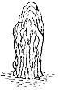
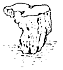
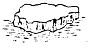
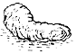
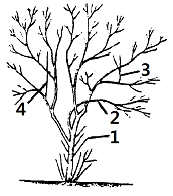

조경기능사 (2007-04-01 기출문제)
1과목: 조경일반
1. 다음중 인도정원에 영향을 미친 가장 중요한 요소는?
- 노단
- 토피어리
- 돌수반
- 물
(정답률: 89%)

2. 골프장 코스 중 출발지점을 가리키는 것은?
- 티(tee)
- 그린(green)
- 페어웨이(fair way)
- 해저드(hazard)
(정답률: 94%)
3. 수형(樹刑)구성에 가장 예민한 영향을 미치는 환경 인자는?
- 공기
- 수분
- 토양
- 광선
(정답률: 75%)
4. 중세 수도원의 전형적인 정원으로 예배실을 비롯한 교단의 공공건물에 의해 둘러싸인 네모난 공지를 가리키는 것은?
- 아트리움(Atrium)
- 페리스탈리움(Peristylium)
- 클라우스트룸(Claustrum)
- 파티오(Patio)
(정답률: 57%)
5. 조선시대 후원에 장식용으로 사용되지 않은 것은?
- 괴석
- 세심석
- 굴뚝
- 석가산
(정답률: 70%)
6. 시공 후 전체적인 모습을 알아보기 쉽도록 그린 그림과 같은 형태의 도면은?
- 평면도
- 입면도
- 조감도
- 상세도
(정답률: 86%)
7. 미국에서 하워드의 전원 도시의 영향을 받아 도시 교외에 개발된 주택지로서 보행자와 자동차를 완전히 분리하고자 한 것은?
- 래드번(Rad burn)
- 레치워어드(Letch worth)
- 웰린(Welwyn)
- 요세미티
(정답률: 79%)
8. 다음 중 명도 대비가 가장 큰 것은?
- 검정과 노랑
- 빨강과 파랑
- 보라와 연두
- 주황과 빨강
(정답률: 84%)
9. 정원의 넓이를 한층 더 크고 변화 있게 하려는 조경기술 중 가장 좋은 방법은?
- 축을 강조
- 눈가림 수법
- 명암을 대비
- 통경선
(정답률: 60%)
10. 다른 나라의 조경양식을 받아들이는데 가장 장애가 되는 것은?
- 과학기술
- 자연환경
- 암석
- 수목
(정답률: 88%)
11. 조경 분야 중 프로젝트의 수행 단계별로 구분하는 순서로 가장 적합한 것은?
- 설계 -> 계획 -> 시공 -> 관리
- 계획 -> 설계 -> 시공 -> 관리
- 설계 -> 관리 -> 계획 -> 시공
- 시공 -> 설계 -> 계획 -> 관리
(정답률: 92%)
12. 다음 중 도시 공원 및 녹지 등에 관한 법률에서 구분한 공원 가운데 그 규모가 가장 작은 것은?
- 묘지공원
- 체육공원
- 근린공원
- 어린이 공원
(정답률: 84%)
13. 다음 중 마운딩(moundng)의 기능으로 가장 거리가 먼 것은?
- 배수 방향을 조절
- 자연스러운 경관을 조성
- 공간기능을 연결
- 유효토심 확보
(정답률: 65%)
14. 독도는 광활한 바다에 우뚝 솟은 바위섬이다. 독도의 전망대에서 바라보는 경관의 유형으로 가장 적합한 것은?
- 파노라마경관
- 지형경관
- 위요경관
- 초점경관
(정답률: 87%)
15. 이집트 데르엘바하리 신전에 사용한 배식기법은?
- 열식
- 점식
- 군식
- 혼식
(정답률: 71%)
2과목: 조경재료
16. 다음 중 수목의 용도에 따르는 설명이 틀린 것은?
- 가로수는 병충해 및 공해에 강해야한다.
- 녹음수는 낙엽활엽수가 좋으며, 가지 다듬기를 할 수 있어야 한다.
- 방풍수는 심근성이고, 가급적 낙엽수이어야 한다.
- 방화수는 상록활엽수이고, 잎이 두꺼워야 한다.
(정답률: 77%)
17. 다음 중 가시 산울타리용으로 사용하기 부적합한 수종은?
- 탱자나무
- 호랑가시나무
- 가시나무
- 찔레나무
(정답률: 58%)
18. 용광로에서 선철을 제조할 때 나온 광석찌꺼기를 석고와 함께 시멘트에 섞은 것으로서 수화열이 낮고, 내구성이 높으며, 화학적 저항성이 큰 한편, 투수가 적은 특징을 갖는 것은?
- 실리카시멘트
- 고로시멘트
- 중용열 포틀랜드시멘트
- 조강 포틀랜드시멘트
(정답률: 81%)
19. 다음 중 아황산가스에 강한 수종으로만 짝지어진 것은?
- 소나무, 전나무
- 히말라야시다, 느티나무
- 삼나무, 편벽나무
- 사철나무, 은행나무
(정답률: 80%)
20. 그 해에 자란 가지에 꽃눈이 분화하여 월동 후 봄에 개화하는 형태의 수종은?
- 능소화
- 배롱나무
- 개나리
- 장미
(정답률: 65%)
21. 다음 중 분류상 덩굴성 식물은?
- 서향
- 송악
- 병아리꽃나무
- 피리칸사스
(정답률: 86%)
22. 다음 수종 중 낙엽활엽수는?
- 후박나무
- 가시나무
- 박태기나무
- 동백나무
(정답률: 57%)
23. 생육환경 중 건조한 지역에 잘 견디는 수종은?
- 삼나무
- 가중나무
- 수국
- 주엽나무
(정답률: 68%)
24. 다음 중 수성암(퇴적암)계통의 석재가 아닌 것은?
- 점판암
- 사암
- 석회암
- 안산암
(정답률: 71%)
25. 자연석을 모양으로 지칭할 때 사석에 해당되는 것은?




(정답률: 79%)
26. 석재의 비중에 대한 설명으로 틀린 것은?
- 비중이 클수록 조직이 치밀하다.
- 비중이 클수록 흡수율이 크다.
- 비중이 클수록 압축 강도가 크다.
- 석재의 비중은 일반적으로 2.0~2.7이다.
(정답률: 77%)
27. 목재 건조시 건조 시간은 단축되나 목재의 크기에 제한을 받고, 강도가 다소 약해지며 광택도 줄어드는 건조방법은?
- 증기법
- 찌는 법
- 공기 가열 건조법
- 훈연 건조법
(정답률: 59%)
28. 관상적인 측면에서 본 분류 중 열매를 감상하기 위한 수종으로 가장 적합한 것은?
- 은행나무
- 모과나무
- 반송
- 낙우송
(정답률: 90%)
29. 목재의 방부제인 C.C.A의 성분이 바르게 짝지어진 것은?
- 크롬-구리-비소
- 크롬-구리-아연
- 철-구리-아연
- 탄소-구리-비소
(정답률: 78%)
30. 시멘트의 저장법으로 틀린 것은?
- 방습 창고에 통풍이 되지 않도록 보관한다.
- 땅바닥에서 10cm 이상 떨어진 마루에서 쌓는다.
- 13포대 이상 쌓지 않는다.
- 3개월 이상 저장하지 않는다.
(정답률: 68%)
31. 다음 중 제품의 제작과정이 다른 것은?
- 시멘트벽돌
- 붉은벽돌
- 점토벽돌
- 내화벽돌
(정답률: 66%)
32. 화단용 초화류의 조건에 해당되지 않는 것은?
- 가급적 키가 커야 한다.
- 가지가 많이 갈라져 꽃이 많이 달려야 한다.
- 개화기간이 길어야 한다.
- 환경에 대한 적응성이 강해야 한다.
(정답률: 93%)
33. 벽돌쌓기 방법 중 가장 견고하고 튼튼한 것은?
- 영국식 쌓기
- 미국식쌓기
- 네덜란드식 쌓기
- 프랑스식 쌓기
(정답률: 82%)
34. 다음 중 단풍나무류에 속하는 수종은?
- 신나무
- 낙상홍
- 계수나무
- 화살나무
(정답률: 60%)
35. 운반 거리가 먼 레미콘이나 무더운 여름철 큰크리트의 시공에 사용하는 혼화제는?
- 지연제
- 감수제
- 방수제
- 경화촉진제
(정답률: 88%)
3과목: 조경 시공 및 관리
36. 정원수 전반에 가해하며, 메타유제(메타시스톡스)의 살포로 방제되는 병해충은?
- 빗자루병
- 흰가루병
- 조명나방
- 진딧물
(정답률: 58%)
37. 잔디의 뗏밥주기에 대한 설명으로 틀린 것은?
- 토양은 기존의 잔디밭의 토양과 같은 것을 5mm 체로 쳐서 사용한다.
- 난지형 잔디의 경우 생육이 왕성한 6~8월에 준다.
- 잔디포장 전면에 골고루 뿌리고, 레이크로 긁어준다.
- 일시에 많이 주는 것이 효과적이다.
(정답률: 88%)
38. 보도에 콘크리트 블록을 포장하려고 하는데 면적이 10m2일 때 소요되는 블록의 장수는?(단, 보도용 콘크리트 규격은 25cmX25cmX6cm, 줄눈 두께는3mm, 모래깔기는 3cm 으로 하되, 줄눈두께와 할증은 계산시 고려하지 않는다.)
- 100장
- 110장
- 130장
- 160장
(정답률: 55%)
39. 콘크리트 공사 중 콘크리트 표면에 곰보가 생기거나 콘크리트내부에 공극이 발생되지 않도록 하는 작업은?
- 콘크리트 다지기
- 콘크리트 비비기
- 콘크리트 붓기
- 콘크리트 양생
(정답률: 83%)
40. 진딧물, 깍지벌레와 관계가 가장 깊은 병은?
- 흰가루병
- 빗자루병
- 줄기 마름병
- 그을음병
(정답률: 76%)
41. 정원수의 전지 및 전정방법으로 틀린 것은?
- 보통 바깥 눈의 바로 윗부분을 자른다.
- 도장지, 병지, 고사지, 쇠약지, 서로 휘감긴 가지 등을 제거한다.
- 침엽수의 전정은 생장이 왕성한 7~8월경에 실시하는 것이 좋다.
- 도구로는 고지가위, 양손가위, 꽃가위, 한손가위 등이 있다.
(정답률: 73%)
42. 수목 생육기 중 깍지벌레의 구제 농약으로 가장 적당한 것은?
- 메치온유제(수프라사이드)
- 지오람수화제(호마이)
- 메타유제(메타시스톡스)
- 디프수화제(디프록스)
(정답률: 55%)
43. 전정(剪定)을 통해 얻어지는 결과라 볼 수 없는 것은?
- 수세의 조절
- 개화 결실의 조정
- 일광, 통풍의 양호
- 지상부의 쇠약
(정답률: 89%)
44. 조적공사 중 중간에 공간을 두고 앞뒤에 면이 보이게 옆 세워 놓고 다음은 마구리 1장을 옆 세워 가로 걸쳐대어 쌓는 방법은?
- 공간벽쌓기
- 세워쌓기
- 옆세워쌓기
- 장식쌓기
(정답률: 56%)
45. 흙 더돋기는 계획된 높이보다 얼마나 더 하는가?
- 5%
- 10%
- 20%
- 30%
(정답률: 82%)
46. 디딤돌 놓기 방법의 설명으로 틀린 것은?
- 돌의 머리는 경관의 중심을 향해서 놓는다.
- 돌 표면이 지표면보다 3~5cm 정도 높게 앉힌다.
- 디딤돌이 시작되는 곳 또는 급하게 구부러지는 곳 등에 큰 디딤돌을 놓는다.
- 돌의 크기와 모양이 고른 것을 선택하여 사용한다.
(정답률: 61%)
47. 바다를 매립한 공업단지에서 토양의 염분함량이 많을 때는 토양 염분을 몇 % 이하로 용탈시킨 다음 식재하는가?
- 0.08
- 0.02
- 0.1
- 0.3
(정답률: 49%)
48. 다음 중 시공관리 내용이 아닌 것은?
- 공정관리
- 품질관리
- 원가관리
- 하자관리
(정답률: 73%)
49. 다음 다듬어야 할 가지들 중 얽힌 가지는?

- 1
- 2
- 3
- 4
(정답률: 74%)
50. 콘크리트의 구성 재료 중 품질이 우수한 골재의 설명으로 틀린 것은?
- 단단하고 둥근 모양을 가지는 골재가 좋다.
- 소요의 내화성과 내구성을 가진 것이 좋다.
- 골재에는 흙, 기름, 푸석돌 등이 없어야 좋다.
- 납작하고 길죽한 모양을 가지는 골재가 강도를 높이는데 좋다.
(정답률: 83%)
51. 원로의 기울기가 몇 도 이상일 때 일반적으로 계단을 설치하는가?
- 3°
- 5°
- 10°
- 15°
(정답률: 76%)
52. 열효율이 높고 물체의 투시성이 좋은 광질(光質 )의 특성 때문에 안개지역 조명, 도로 조명, 터널 조명 등으로 사용하기 가장 적합한 등은?
- 할로겐등
- 형광등
- 수은등
- 나트륨등
(정답률: 75%)
53. 다음 중 정원석 쌓기 및 수목을 들어 올리는데 가장 적합한 기구나 기계는?
- 불도져
- 탬덤 로울러
- 체인 블록
- 덤프트럭
(정답률: 85%)
54. 경관석 놓기의 내용으로 틀린 것은?
- 경관석은 충분한 크기와 중량감이 있어야 한다.
- 경관석은 모양, 색채, 질감 등이 아름다워야 한다.
- 여러 개 짝을 지어 배석할 때는 대개 짝수로 구성하여 균형을 유지하도록 배치한다.
- 조경공간에서 시선이 집중되는 곳에 경관석을 배치 한다.
(정답률: 88%)
55. 제 1신장기를 마치고 가지와 잎이 무성하게 자라면 통풍이나 채광이 나쁘게 되기 때문에 도장지나 너무 혼잡하게 된 가지를 잘라 주어 광, 통풍을 좋게 하기 위한 전정은?
- 봄 전정
- 여름 전정
- 가을 전정
- 겨울 전정
(정답률: 69%)
56. 도면을 그릴 때 일반적으로 마지막에 실시해야 할 내용인 것은?
- 도면의 축척을 정한다.
- 표제란의 내용을 기재한다.
- 테두리 선 및 방위를 그린다.
- 물체의 표현 위치를 정한다.
(정답률: 72%)
57. 수목의 일반적인 전정방법으로 옳지 않은 것은?(오류 신고가 접수된 문제입니다. 반드시 정답과 해설을 확인하시기 바랍니다.)
- 수형이나 목적에 맞지 않는 가지부터 자른다.
- 가지를 자를 때는 위쪽에서 아래쪽으로 자른다.
- 가지를 자를 때 수관 밖에서부터 안쪽으로 자른다.
- 가는 가지를 먼저 자르고, 그 다음 굵은 가지를 자른다.
(정답률: 67%)
58. 건설업자가 대상 계획의 기업ㆍ금융ㆍ토지조달ㆍ설계ㆍ시공ㆍ기계기구설치ㆍ시운전 및 조업지도 까지 주문자가 필요로 하는 모든 것을 조달하여 주문자에게 인도하는 도급계약방식은?
- 지명경쟁입찰
- 수의계약가지명경쟁입찰
- 턴키(Turn-key)입찰
- 제한경쟁입찰
(정답률: 71%)
59. 돌쌓기의 종류 중 찰 쌓기에 대한 설명으로 옳은 것은?
- 뒤 채움에 콘크리트를 사용하고, 줄눈에 모르타르를 사용하여 쌓는다.
- 돌만을 맞대어 쌓고 잡석, 자갈 등으로 뒤 채움을 하는 방법이다.
- 마름돌을 사용하여 돌 한켜의 가로 줄눈이 수평적 직선이 되도록 쌓는다.
- 막돌, 깬 돌, 깬 잡석을 사용하여 줄눈을 파상 또는 골을 지어 가며 쌓는 방법이다.
(정답률: 63%)
60. 다음 제도용구 가운데 곡선을 긋기 위한 도구는?
- T자
- 삼각자
- 운형자
- 삼각축척자
(정답률: 90%)